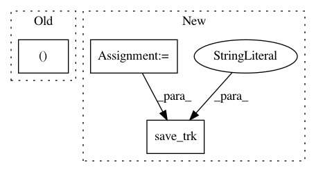

a302d7acc00d48d6536bc892593207b5cf09440f,doc/examples/bundle_extraction.py,,,#,28
Before Change
save_trk( "AF_L.trk", target[af_l_labels], hdr["voxel_to_rasmm"])
model_cst_l, hdr = load_trk(model_cst_l_file)
recognized_cst_l, cst_l_labels = rb.recognize(model_bundle=model_cst_l,
model_clust_thr=5.,
After Change
space of the subject anatomy.
reco_af_l = StatefulTractogram(target[af_l_labels], target_header,
Space.RASMM)
save_trk(reco_af_l, "AF_L.trk", bbox_valid_check=False)
sft_cst_l = load_trk(model_cst_l_file, "same", bbox_valid_check=False)
model_cst_l = sft_cst_l.streamlines
recognized_cst_l, cst_l_labels = rb.recognize(model_bundle=model_cst_l,
model_clust_thr=5.,
reduction_thr=10,
reduction_distance="mam",
slr=True,
slr_metric="asymmetric",
pruning_distance="mam")
let"s visualize extracted Corticospinal Tract (CST) Left bundle and model
bundle together
interactive = False
ren = window.Renderer()
ren.SetBackground(1, 1, 1)
ren.add(actor.line(model_cst_l, colors=(.1, .7, .26)))
ren.add(actor.line(recognized_cst_l, colors=(.1, .1, 6)))
ren.set_camera(focal_point=(-18.17281532, -19.55606842, 6.92485857),
position=(-360.11, -340.46, -40.44),
view_up=(-0.03, 0.028, 0.89))
window.record(ren, out_path="CST_L_recognized_bundle.png",
size=(600, 600))
if interactive:
window.show(ren)
.. figure:: CST_L_recognized_bundle.png
:align: center
Extracted Corticospinal Tract (CST) Left bundle and model bundle
Save the bundle as a trk file:
reco_cst_l = StatefulTractogram(target[cst_l_labels], target_header,
Space.RASMM)
save_trk(reco_af_l, "CST_L.trk", bbox_valid_check=False)
In pattern: SUPERPATTERN
Frequency: 3
Non-data size: 3
Instances
Project Name: nipy/dipy
Commit Name: a302d7acc00d48d6536bc892593207b5cf09440f
Time: 2019-07-26
Author: francois.m.rheault@usherbrooke.ca
File Name: doc/examples/bundle_extraction.py
Class Name:
Method Name:
Project Name: nipy/dipy
Commit Name: 86a9c8708beb38293d30bafdcdf2bdd5fc76edd6
Time: 2017-06-26
Author: garyfallidis@gmail.com
File Name: doc/examples/tracking_quick_start.py
Class Name:
Method Name:
Project Name: nipy/dipy
Commit Name: cf136cf46fafe9167709f9d7e4f5c29630184e04
Time: 2019-02-26
Author: arokem@gmail.com
File Name: doc/examples/bundle_extraction.py
Class Name:
Method Name: